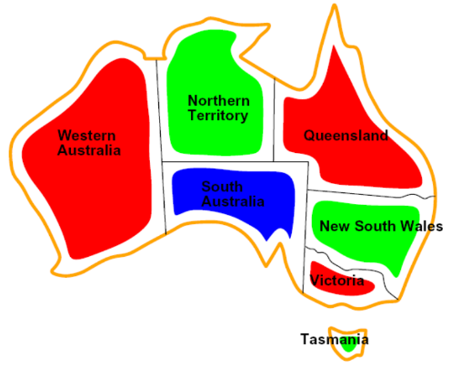
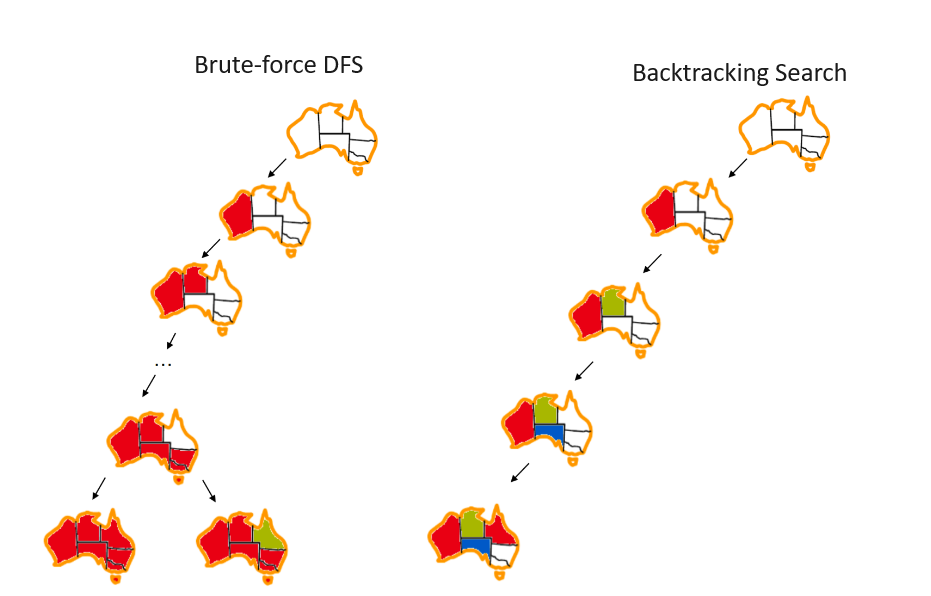
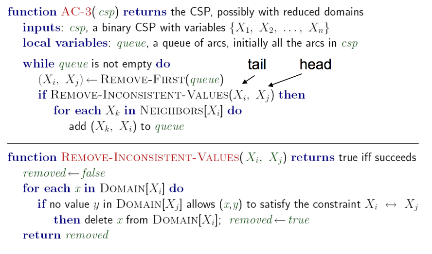
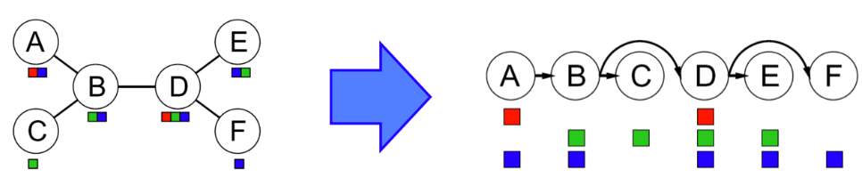
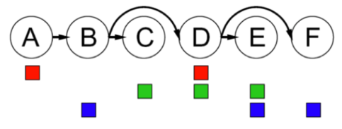
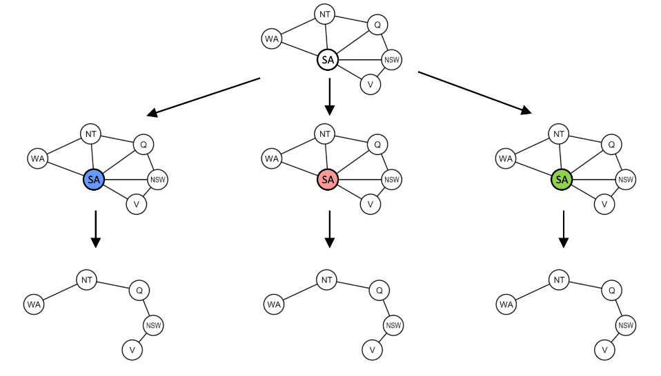
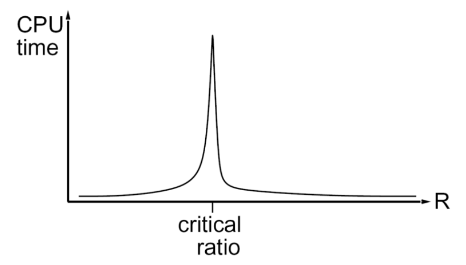
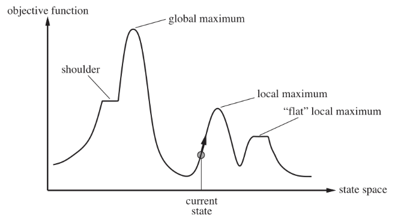

Constraint Satisfaction Problems
CSPs are a type of identification problem, problems in which we must simply identify whether a state is a goal state or not, with no regard to how we arrive at that goal.
CSPs are defined by three factors:
- Variables: \(X_1, X_2, \ldots, X_n\)
- Domains: A set of \(\{x_1, x_2, \ldots, x_d\}\) representing all possible values that a CSP variable can take on.
- Constraints: Defines restrictions on the values of variables.
Constraints satisfaction problems are NP-Hard.
We can often get around this by formulating CSPs as search problems, defining states as partial assignments.
Constraint Graphs
Another CSP example: map coloring.
Color a map such that no two adjacent regions have the same color.

Constraint satisfaction problems are often represented as constraint graphs, where nodes represent variables and edges represent constraints between them.
- Unary constraints: involve a single variable in the CSP.
- Binary constraints: involve two variables in the CSP.
- Higher-order constraints: involve more than two variables.
The value of constraint graphs is that we can use them to extract valuable information about the structure of the CSPs we are solving.
Solving Constraint Satisfaction Problems
Backtracking search, an optimization on depth-first search, is used specifically for the problem of constraint satisfaction, with improvements coming from two main principles:
- Fix an ordering for variables, and select values for variables in this order.
- When selecting values for a variable, only select values that don't conflict with any previously assigned variables.

Though backtracking search is a vast improvement over the brute-forcing of depth first search, we can get more gains in speed still with further improvements through filtering, variable/value ordering, and structural explotation.
Filtering
Checks if we can prune the domains of unassigned variables ahead of time by removing values we know will result in backtracking.
Naive approach: Forward Checking
Whenever a value is assigned to a variable \(X_i\), prunes the domains of unassigned variables that share a constraint with \(X_i\) that would violate the constraint if assigned.
The idea of forward checking can be generalized to arc consistency.
Arc Consistency
Info
For arc consistency, we interpret each undirected edge of the constraint graph for a CSP as two directed edges pointing to opposite directions. Each of these directed edges is called an arc.
Arc consistency关注的是二元约束，也就是涉及两个变量的约束。对于一个arc， 在tail的domain中任意一个值都能找到一个head的值，使得这两个值满足约束，那么这个arc就是consistent的。 对于一个CSP，如果所有的arc都是consistent的，那么这个CSP就是arc consistent的。
Takeaway
- If X loses a value, neighbors of X need to be rechecked.
- Arc consistency detects failure earlier than forward checking.
- Can be run as a preprocessor or after each assignment.
- Remember: delete from the tail!
The arc consistency algorithm is as follows:
- Begin by storing all arcs in the constraint graph for the CSP in a queue \(Q\).
- Iteratively remove arcs from \(Q\) and enforce the condition that in each removed arc \(X_{i} \longrightarrow X_{j}\), for every remaining value \(v\) for the tail variable \(X_i\), there is at least one remaining value \(w\) for the head variable \(X_j\) such that the assignment \(X_i = v\) and \(X_j = w\) does not violate any constrains. If some value \(v\) for \(X_i\) would not work with any of the remaining values for \(X_j\), we remove \(v\) from the set of possible values for \(X_i\).
- If at least one value is removed for \(X_i\) when enforcing arc consistency for an arc \(X_i \longrightarrow X_j\), add arcs of the form \(X_k \longrightarrow X_i\) to \(Q\), for all unassigned variables \(X_k\).
- Continue until \(Q\) is empty, or the domain of some variables is empty and triggers a backtrack.
Arc consistency is typically implemented with the AC-3 algorithm:

Ordering
It’s often much more effective to compute the next variable and corresponding value "on the fly" with two broad principles, minimum remaining values and least constraining value.
- Minimum Remaining Values (MRV) - When selecting which variable to assign next, using an MRV policy chooses whichever unassigned variable has the fewest valid remaining values (the most constrained variable).
- Fail-fast ordering: 你总要赋值给所有的变量，那么现在有一些变量有很多remaining values(易处理)，有一些变量只有很少的remaining values(难处理)，那么你就应该先处理那些难搞的变量，这样如果有问题，你就能早点发现，早点backtrack，而不是浪费时间在搞easy stuff，最后才发现有问题。
- Least Constraining Value (LCV) - Similarly, when selecting which value to assign next, a good policy to implement is to select the value that prunes the fewest values from the domains of the remaining unassigned values.
- 跟选择variable的时候不同，你并不需要把所有的value都试一遍，所以你可以先尝试那些prune最少的value，这样你给其他variable留下的domain就会更大，更有可能找到一个solution。
Structure
A final class of improvements to solving constraint satisfaction problems are those that exploit their structure.
Tree-Structured CSPs
We can solve tree-structured CSPs (one that has no loops in its constraint graph) in \(O(n \cdot d^2)\) time, using the tree-structured CSP algorithm:
- Pick an arbitrary node in the constraint graph for the CSP to serve as the root of the tree.
- Convert all undirected edges in the tree to directed edges that point away from the root. Then linearize (or topologically sort) the resulting directed acyclic graph.
- 简单来说就是把tree转化成一个有向图，然后把node排序，让每一条edge都是从左往右指的。

- Perform a backwards pass of arc consistency.
- 从右往左遍历，enforce arc consistency for all arcs \(Parent(X_i) \longrightarrow X_i\).
- 这可能会prune掉一些value。

- Finally, perform a forwards assignment.
- Starting from \(X_1\) and going to \(X_n\) (从左往右), assign each \(X_i\) a value consistent with that of its parents.
- Because we’ve enforced arc consistency on all of these arcs, this iterative assignment guarantees a correct solution.
Cutset Conditioning
有些CSP的constraint graph不是tree-structured的，但是我们可以通过cutset conditioning来把它变成tree-structured的，然后再用tree-structured CSP algorithm来解决。

- First finding the smallest subset of variables in a constraint graph such that their removal results in a tree (such a subset is known as a cutset for the graph).
- Once the smallest cutset is found, we assign all variables in it and prune the domains of all neighboring nodes.
- What’s left is a tree-structured CSP, upon which we can solve with the tree-structured CSP algorithm.
Local Search
Backtracking search isn't the only algorithm for solving constraint satisfaction problems. Another widely used algorithm is local search.
Idea
Iterative improvement - start with some random assignment to values then iteratively select a random conflicted variable and reassign its value to the one that violates the fewest constraints until no more constraint violations exist (a policy known as the min-conflicts heuristic).
Local search is both incomplete and suboptimal, there is a critical ratio around which using local search becomes extremely expensive:

We wish to find the state that corresponds to the highest objective value.

The basic idea of local search algorithms is that from each state they locally move towards states that have a higher objective value until a maximum (hopefully the global) is reached.
Hill-Climbing Search
- Moves to better states but can get trapped at local maxima or plateaus.
- Variants like stochastic hill-climbing improve results at the cost of more iterations.
Simulated Annealing Search
- Aims to combine random walk (randomly moves to nearby states) and hill-climbing to obtain a complete and efficient search algorithm.
Genetic Algorithms
Summary
Constraint satisfaction problems in general don't have an efficient algorithm which solves them in polynomial time.
However, we can often find solutions in an acceptable amount of time:
- Filtering - Filtering handles pruning the domains of unassigned variables ahead of time to prevent unnecessary backtracking. The two important filtering techniques we’ve covered are forward checking and arc consistency.
- Ordering - Ordering handles selection of which variable or value to assign next to make backtracking as unlikely as possible. For variable selection, we learned about a MRV policy and for value selection we learned about a LCV policy.
- Structure - If a CSP is tree-structured or close to tree-structured, we can run the tree-structured CSP algorithm on it to derive a solution in linear time. Similarly, if a CSP is close to tree structured, we can use cutset conditioning to transform the CSP into one or more independent tree-structured CSPs and solve each of these separately.